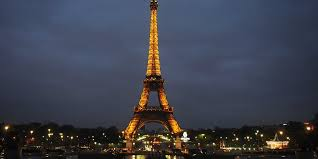

The Louvre Museum
Once a royal palace, the Louvre is now the world's largest art museum. It houses thousands of works, including the famous Mona Lisa, and is a centerpiece of French history and culture.

Located in Paris, this iron tower is one of the most recognizable structures in the world. Originally built for the 1889 World's Fair, it now stands as a global symbol of French creativity.

Once a royal palace, the Louvre is now the world's largest art museum. It houses thousands of works, including the famous Mona Lisa, and is a centerpiece of French history and culture.
This stunning island commune in Normandy features a medieval abbey that appears to float above the sea during high tide. It is a masterpiece of both nature and human architecture.